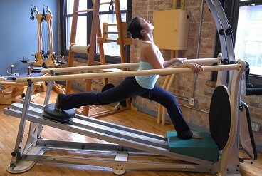
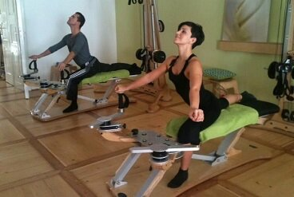

Gyrotonic
|  |  |
Seen above, a Master Trainer practicing on the Jump Stretch Board at the Chicago Center for Body Movement (left), a video demonstration of Advanced Gyrotonic techniques (centre), and Andrej Skufca and Melinda Torokyorgy, former Professional Latin World Finalists, training on the Gyrotonic tower (right).
The GYROTONIC Expansion System® is a newer form of exercise and was created by former dancer and gymnast Juliu Horvath. GYROTONIC draws from elements of ballet, gymnastics, swimming, Tai Chi and yoga. Unlike Pilates, which is primarily linear, GYROTONIC employs spherical, three-dimensional flowing movements. GYROTONIC helps the body reach its fullest range of motion in all possible directions while building strength to support those movements. Proper breath and rhythm are synchronized to allow the body and mind to work in harmony. GYROTONIC helps retrain the body and change improper muscular patterns. Chicago Center for Body Movement is fully equipped with three GYROTONIC Pully Towers, Ladder and a new Jump Stretch Board.
{kind=link}